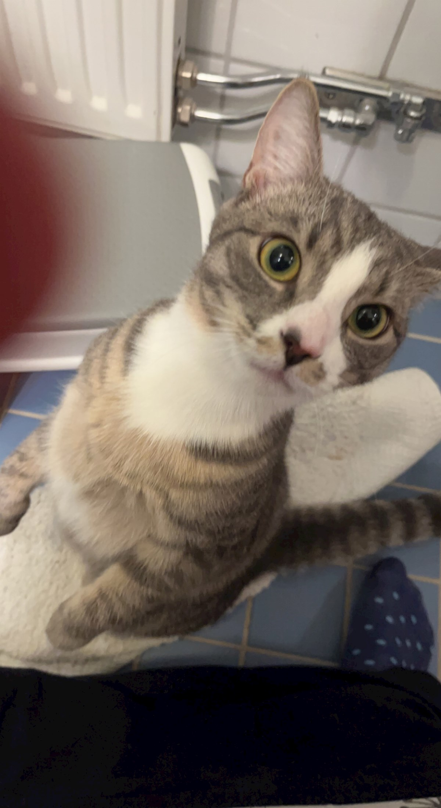
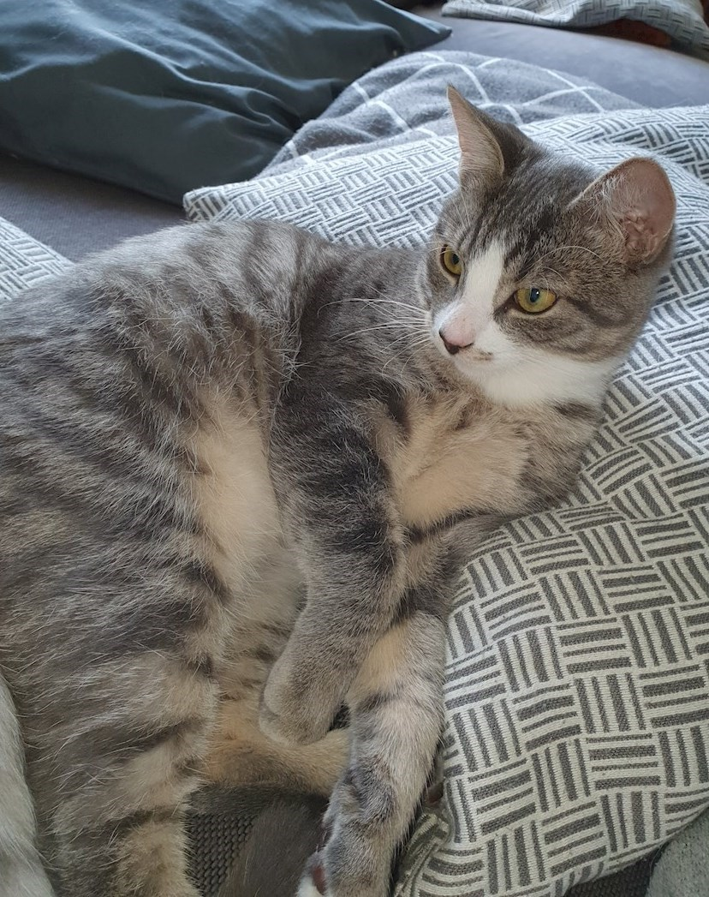

Vi behöver din hjälp att hitta Torsten ❤️


Torsten håller på att lära sig att gå ut, och är ganska skygg. När han är ute håller han sig då i ett ganska litet område bakom broderivägen, efter några timmar brukar vi gå och ropa efter honom och då kommer han normalt sett direkt och vi leder honom in. Nu har vi inte sett av honom på snart 4 dagar.